40 سؤال
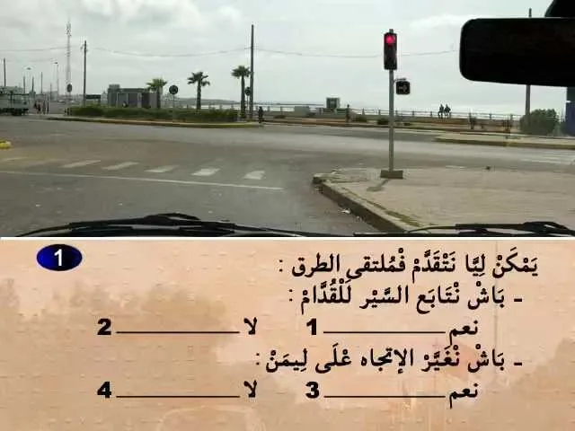
الجواب الصحيح: 2 و 3
خاصني نوقف عند خط الوقوف ونحترم الضوء الحمر إلا بغيت نمشي مباشرة، ولكن إلا بغيت نبدل الاتجاه لليمين يمكن حيث كاينة إشارة ضوئية خضرا كتسمح بتبديل الاتجاه لليمين.
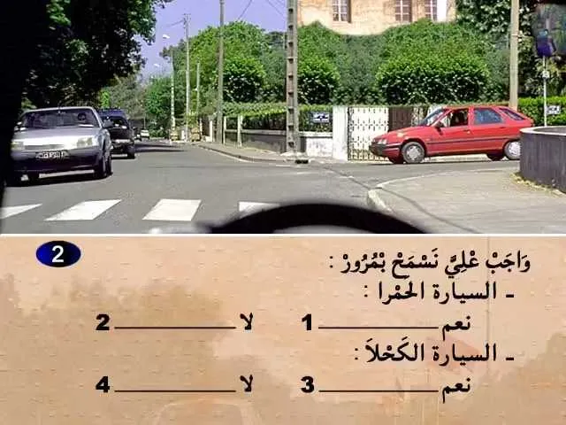
الجواب الصحيح: 1 و 4
فملتقى الطرق وما كاينش بوليسي أو إشارة تنظم حركة السير، الأسبقية للطوموبيلات اللي جاية من اليمين، فهاد الحالة الطوموبيل الحمرا تدوز اللولا حيث هي على اليمين، ومن بعد نكمل أنا السير مباشرة، ومن بعد الطوموبيل الكحلا.
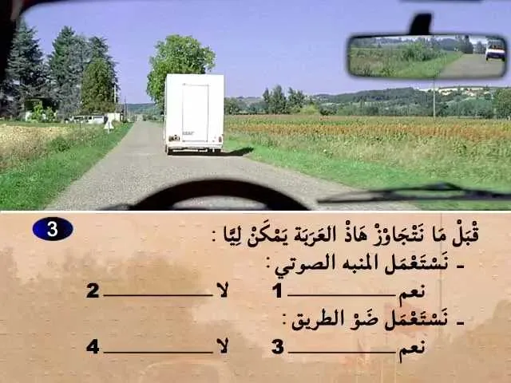
الجواب الصحيح: 1 و 3
حنا فالصباح وبرّا المدينة، فهاد الحالة يمكن نستعملو الكلاكسون وأضواء الطريق حيث العربة اللي قدامنا فيها مراية عاكسة اللي تمكنها تشوف الضوء، وحيث سائق الشاحنة ممكن ما يسمعش الكلاكسون.
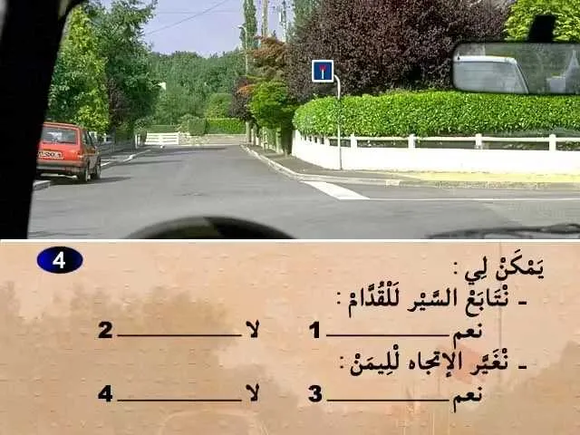
الجواب الصحيح: 1 و 3
العلامة الطرقية كتعني أن الطريق مسدودة فالآخر وما كاينش مخرج، ما كتمنعنيش ندوز، وبالنسبة لتبديل الاتجاه لليمين يمكن ندير هادشي حيث ما كايناش علامة طرقية كتمنع.
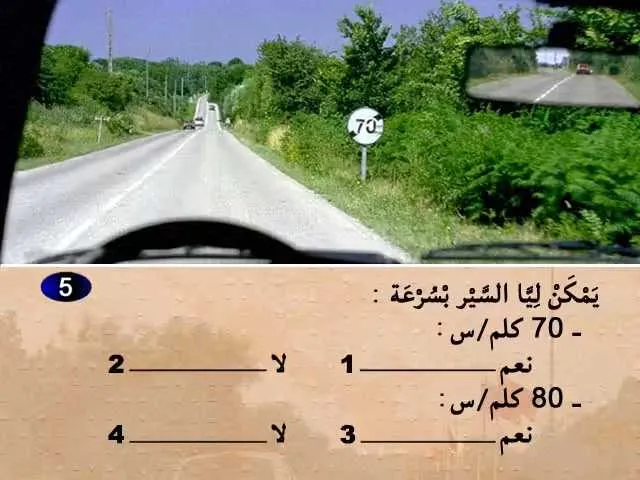
الجواب الصحيح: 1 و 3
حنا فطريق وطنية والسرعة فيها محدودة فـ100 كلم في الساعة. العلامة الطرقية كتعني أن المنع اللي كان قبل انتهى، يعني يمكنني نمشي بسرعة 70 كلم في الساعة، وبما أنها طريق وطنية والسرعة القصوى فيها 100 كلم في الساعة، يعني يمكنني نمشي حتى بسرعة 80 كلم في الساعة.
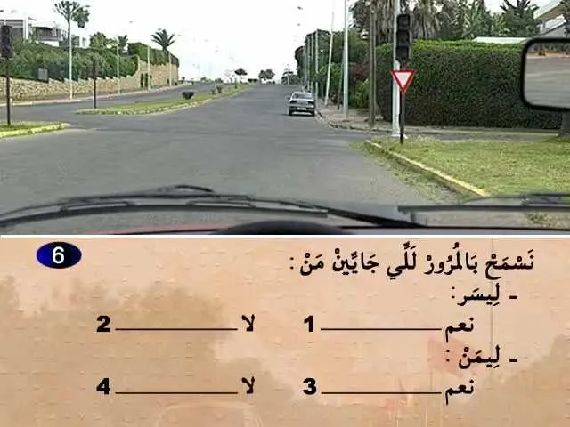
الجواب الصحيح: 1 و 3
اللافتة الطرقية كتعني الانتباه وما عندناش حق الأسبقية، يعني خاصنا نسمحو للي جايين من اليسار واللي جايين من اليمين يدوزو.
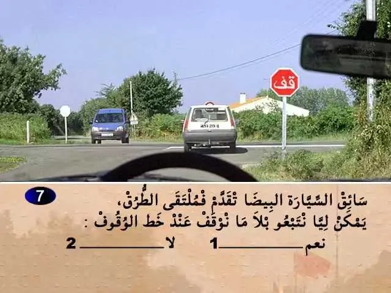
الجواب الصحيح: 2
أول حاجة عندنا إشارة "قف"، خاصني نوقف عند خط الوقوف، خاص نحترم الإشارات المرورية.
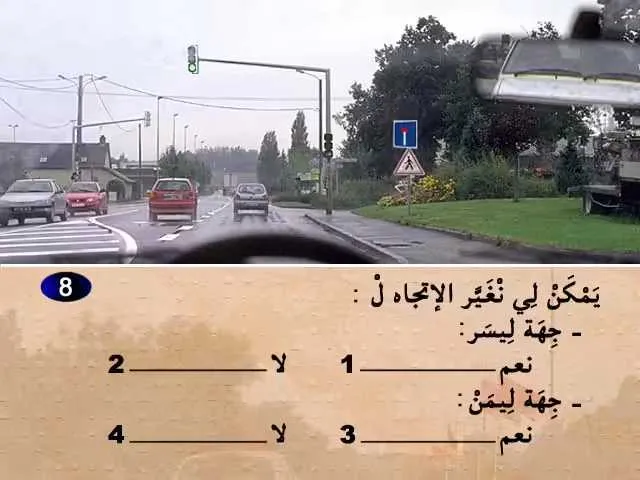
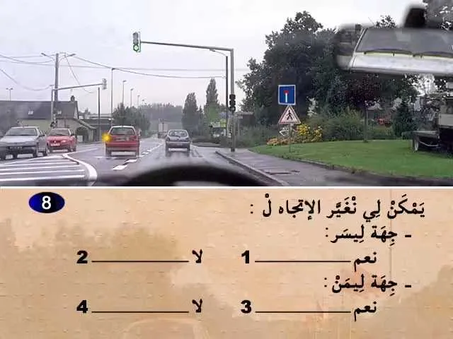
الجواب الصحيح: 1 و 3
ما كايناش شي علامة كتمنعني نبدل الاتجاه لليسار أو اليمين، العلامة الطرقية كتعني أن الطريق اللي قدام ما فيهاش مخرج، والضوء خضر يمكنني نبدل الاتجاه لليمين أو اليسار.
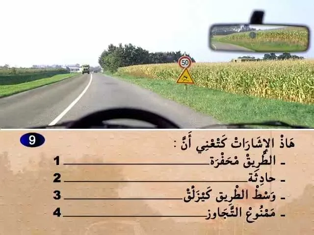
الجواب الصحيح: 3 و 4
كاينة علامة أفقية اللي هي الخط المتصل اللي كتعني ممنوع التجاوز، وكاينة إشارة كتشير أن الطريق كيزلق، وعلامة تحديد السرعة، يعني وسط الطريق كيزلق وممنوع التجاوز.
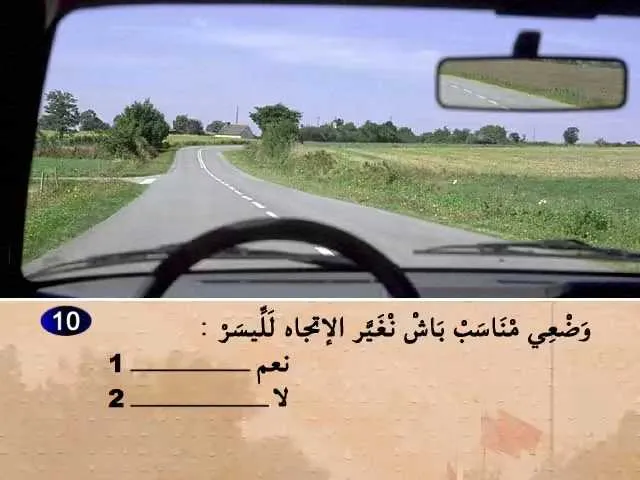
الجواب الصحيح: 2
باش نبدل الاتجاه لليسار، خاصني نكون فالمسار على اليمين، هاد المسلك غير للتجاوز، يعني وضعي غير مناسب باش نبدل الاتجاه لليسار.
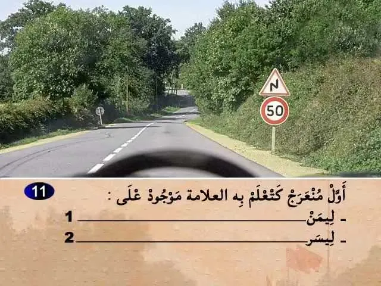
الجواب الصحيح: 1
العلامة الطرقية كتشير أن المنعرج اللول غادي يكون على اليمين.
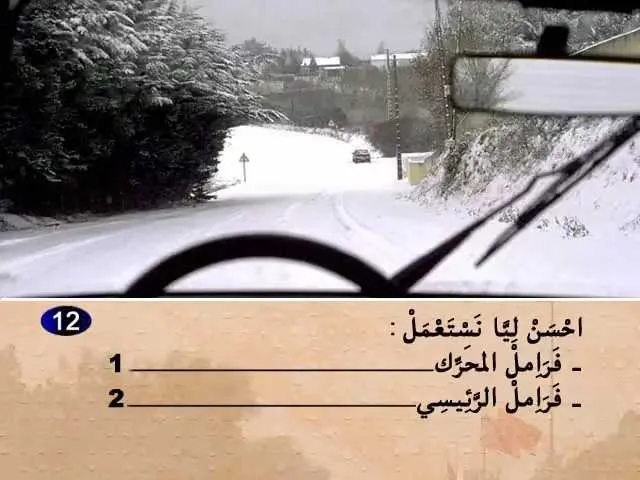
الجواب الصحيح: 1
فهاد الحالة كيف ما كتشوفو، كاين الثلج، إلا استعملنا الفرامل الرئيسية ديال العجلات ما غاديش يكون عندها مفعول مزيان فالثلج، من الأحسن نستعملو فرامل المحرك.
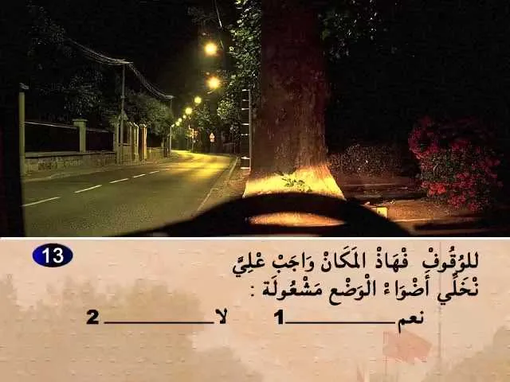
الجواب الصحيح: 2
أنا برا الطريق ومتوقف مزيان على جنب الطريق، ماشي ضروري نخلي أضواء الوضع شاعلة.
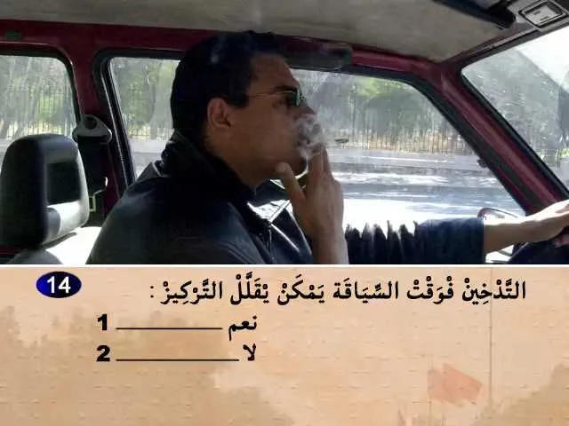
الجواب الصحيح: 1
التدخين والأدوية والمشروبات الكحولية والتعب كينقصو التركيز أثناء السياقة.
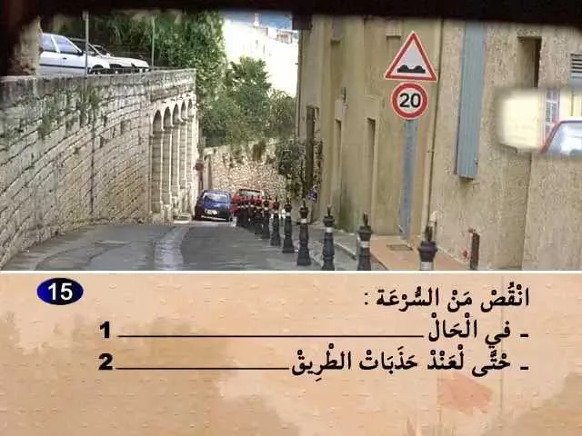
الجواب الصحيح: 1
عندنا جوج علامات، علامة الخطر وعلامة المنع، بالنسبة لعلامة المنع خاصها تطبق من عند العلامة، وبالنسبة لعلامة الخطر كتعلمني أن الخطر كاين بعد 50 متر.
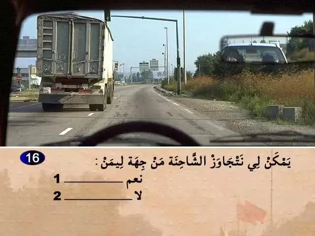
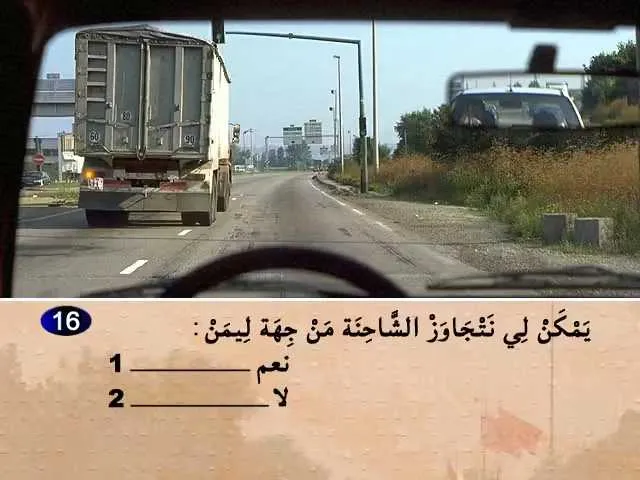
الجواب الصحيح: 1
الحالة الوحيدة اللي كاتسمح لينا نتجاوزو من الجهة اليمنى هي ملي تكون العربة اللي قدامنا غادي تبدل الاتجاه لليسار، فهاد الحالة يمكننا نتجاوزوها من الجهة اليمنى باش نقدر ندوز.
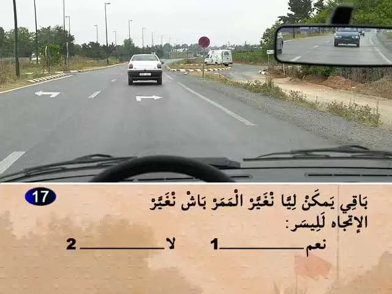
الجواب الصحيح: 2
ما يمكنش نبدل الممر للاتجاه لليسار حيث كاينة طوموبيل فالمسلك الآخر كاتجاوز، يعني ما يمكنش نبدل المسلك دابا حيث ما عنديش الوقت الكافي.
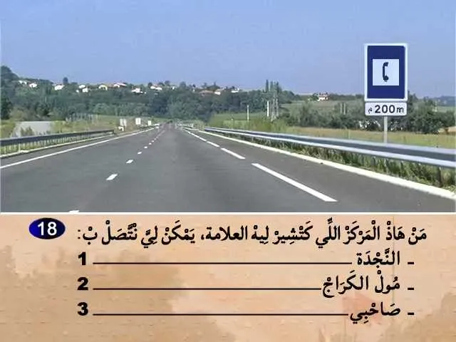
الجواب الصحيح: 1
العلامة الطرقية كتعني مركز خاص بالنجدة، وغادي يكون بعد 200 متر ف الطريق السيار، وهو خاص غير بطلب النجدة وماشي لشي حاجة أخرى.
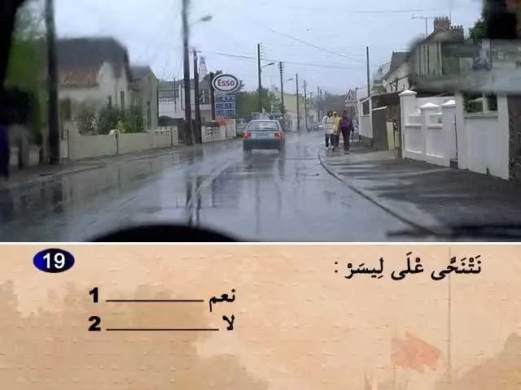
الجواب الصحيح: 1
فهاد الحالة الجو ممطر وكاينين بعض الراجلين، باش نحافظ على سلامتهم وما نرش عليهم الماء المتواجد فالطريق، خاصني نتنحى شوية لليسار.
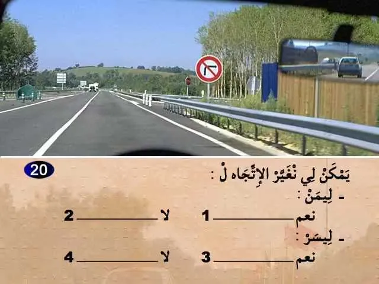
الجواب الصحيح: 2 و 4
عندنا جوج علامات كاتمنعنا من تغيير الاتجاهات، علامة أفقية كتمنعنا نبدلو الاتجاه لليسار اللي هي الخط المتصل وعلامة عمودية كاتمنعنا نبدلو الاتجاه لليمين.
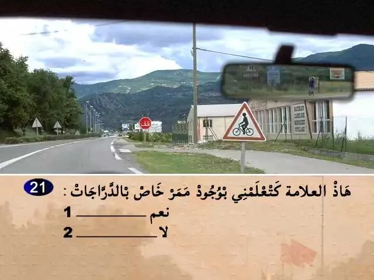
الجواب الصحيح: 2
العلامات الطرقية اللي كتعلمنا بوجود ممرات خاصة كتكون باللون الأزرق. بالنسبة لهاد اللافتة فهي علامة خطر وكتعلمنا بوجود دراجات هوائية ماشي ممر خاص بالدراجات.
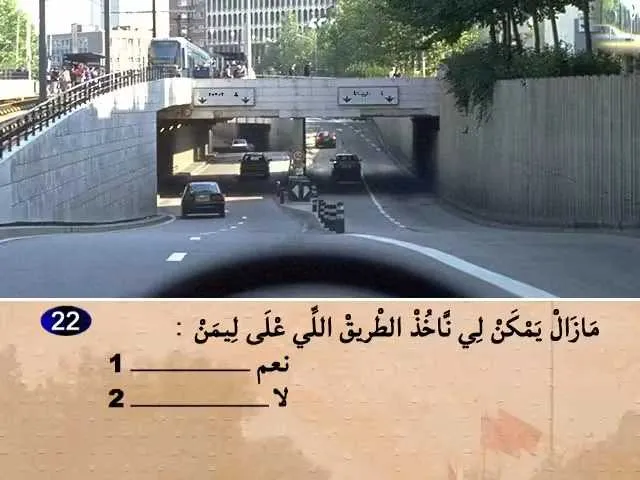
الجواب الصحيح: 2
ملي يكون الخط متصل، ما يمكنش نبدلو المسار.
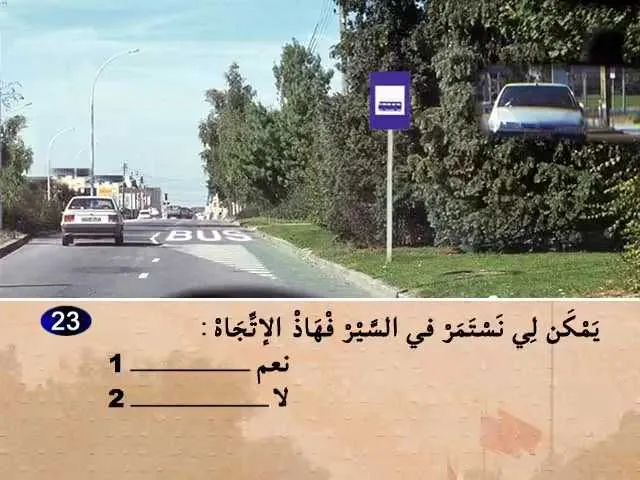
الجواب الصحيح: 2
ملي تكون كلمة BUS مكتوبة فالطريق، هاد الشي كيعني أن هاد المسلك خاص بالحافلات فقط، يعني ما يمكنش نكمل فهاد الاتجاه خاصني نمشي فالمسلك اللي على اليسار.
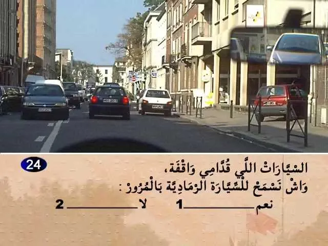
الجواب الصحيح: 1
وبما أن حركة السير واقفة، ما فيها باس نسمح للطوموبيل الرمادية تدوز باش نسهل حركة المرور.
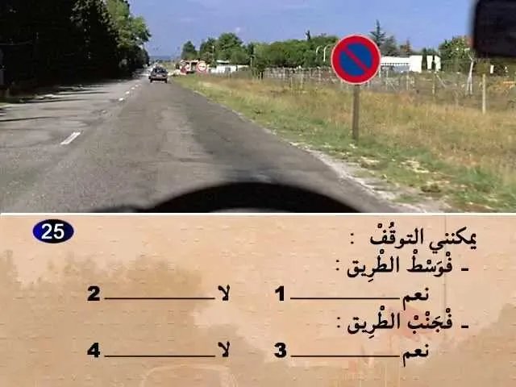
الجواب الصحيح: 2 و 4
فطريق وطنية وبدون إشارات طرقية، ما يمكنش ليا نوقف فوسط الطريق، وحتى فجنب الطريق ما يمكنش نوقف حيث كاينة علامة طرقية كاتمنعني من التوقف.
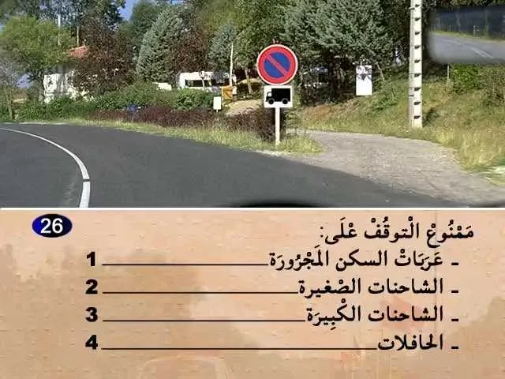
الجواب الصحيح: 2 و 3
كاينة علامة ممنوع التوقف وكاينة علامة تكميلية خاصة بالشاحنات الصغيرة والكبيرة.
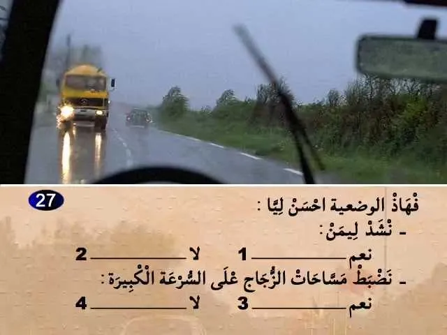
الجواب الصحيح: 1 و 3
خاصني نسوق في اليمين مزيان، ولازم نضبط مساحات الزجاج على سرعة كبيرة حيث الجو ممطر بزاف.
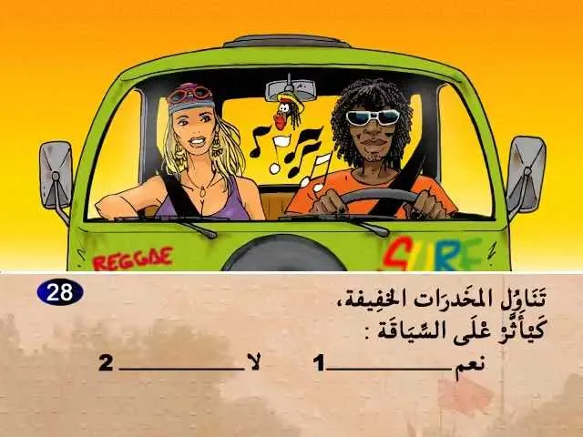
الجواب الصحيح: 1
المخدرات أو الدواء أو التعب أو المشروبات الكحولية كيأثرو على السياقة.
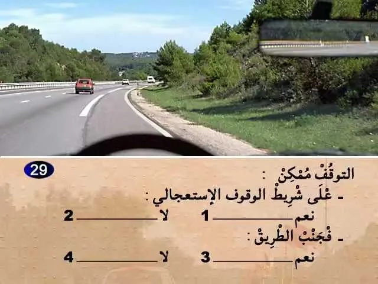
الجواب الصحيح: 2 و 4
فالطريق السيار ممنوع الوقوف والتوقف نهائيا إلا للضرورة القصوى.
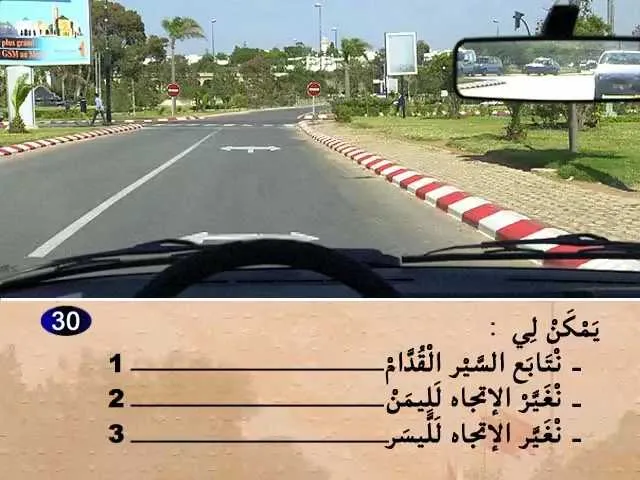
الجواب الصحيح: 2 و 3
كاينة علامة عمودية فالطريق كتعني ممنوع نكملو السير للقدام، وكاينين أسهم فالطريق كيسمحوا ليا نبدل الاتجاه لليمين أو اليسار.
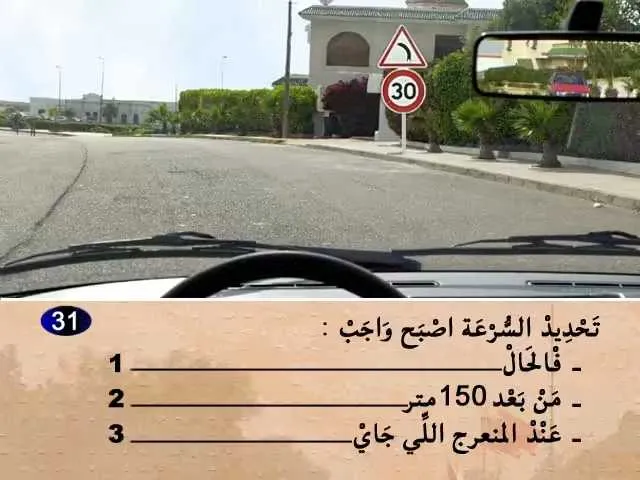
الجواب الصحيح: 1
بالنسبة لعلامات المنع، تطبق من عند العلامة.
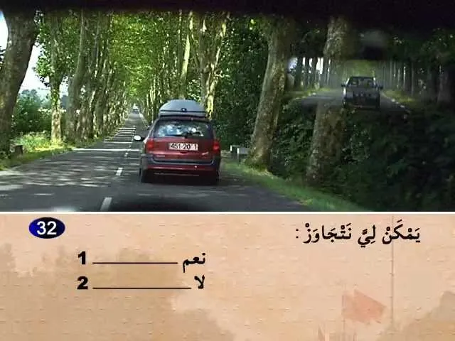
الجواب الصحيح: 1
الطوموبيل اللي ورايا ما كتحضرش للتجاوز وكاين خط متقطع كيخليني نتجاوز.
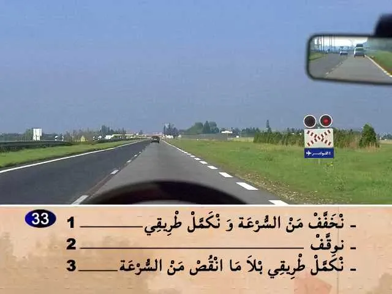
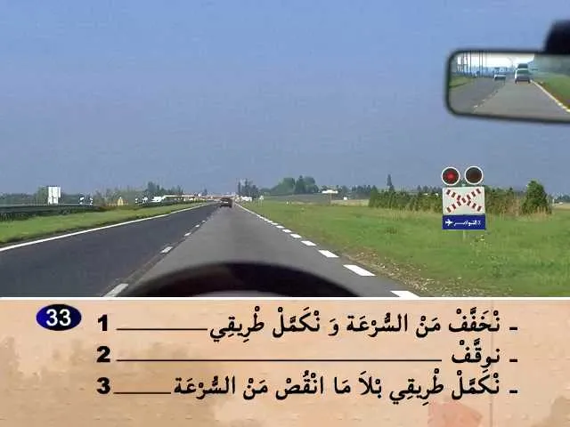
الجواب الصحيح: 2
هاد المؤشر كيعلمنا بضرورة الوقوف حيث باللون الأحمر، وغالبا كيكون قرب المطارات أو السكك الحديدية.
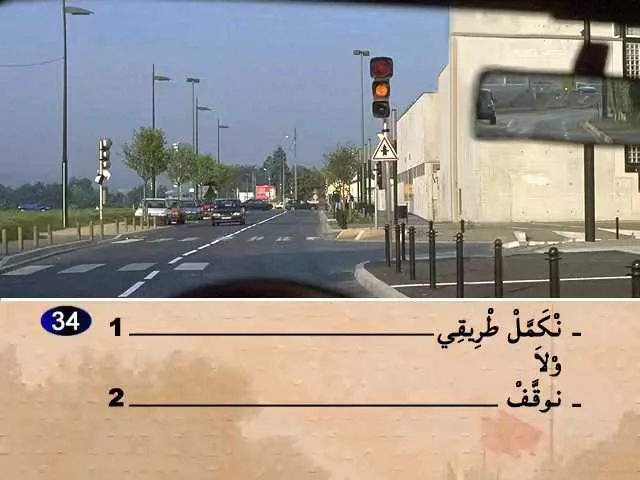
الجواب الصحيح: 2
الضوء لونه برتقالي وكيعلمنا بقرب الضوء الأحمر، يعني خاصني نوقف.
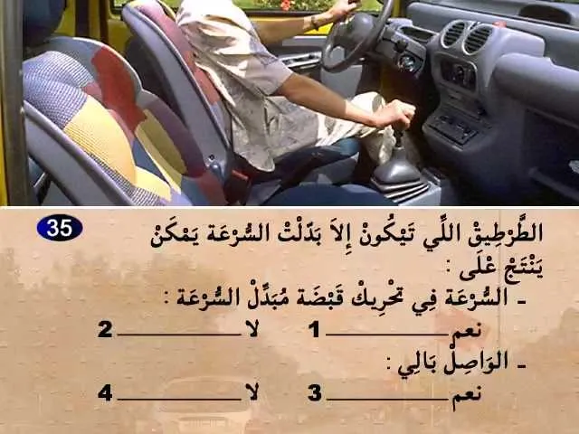
الجواب الصحيح: 1 و 3
الصوت والطرطقة غالبا كيكونو بسبب تحريك قبضة مبدل السرعة بسرعة، والسبب الآخر ممكن يكون أن الواصل قديم.
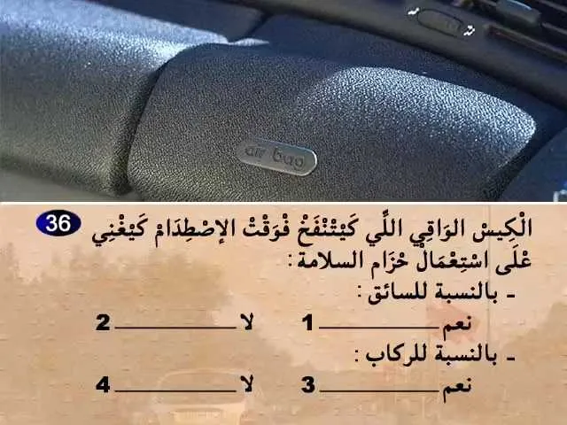
الجواب الصحيح: 2 و 4
الكيس الواقي (Airbag) ما كيعوضش حزام السلامة لا بالنسبة للسائق ولا الركاب، هو تكميلي لحزام السلامة.
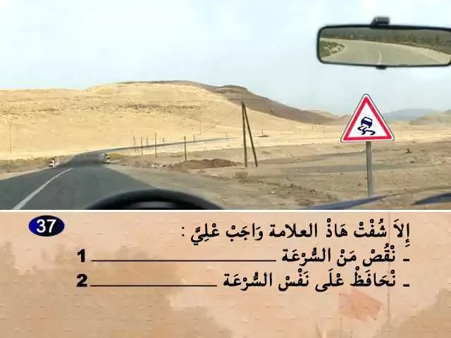
الجواب الصحيح: 1
دائما فعلامات الخطر خاصني ننقص من السرعة.
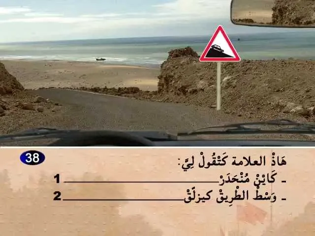
الجواب الصحيح: 1
بالنسبة لهاد العلامة الطرقية الخاصة بالخطر، فهي كتعلم بوجود منحدر.
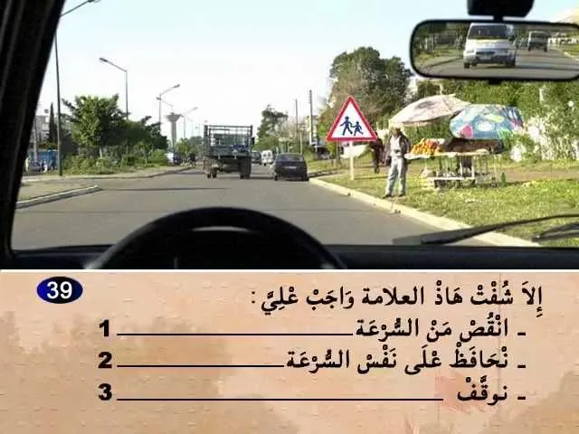
الجواب الصحيح: 1
بالنسبة لعلامات الخطر بصفة عامة، خاصني ننقص من السرعة.
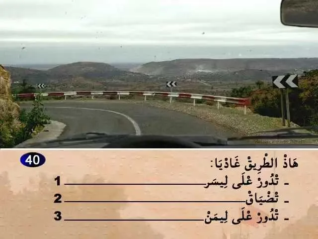
الجواب الصحيح: 1
العلامات الطرقية اللي كاينة على جنب الطريق هي أسهم متجهة نحو اليسار، يعني الطريق غادي تتجه نحو اليسار.